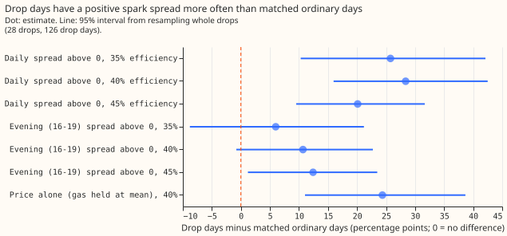
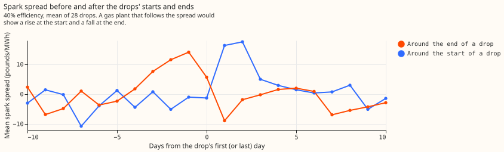
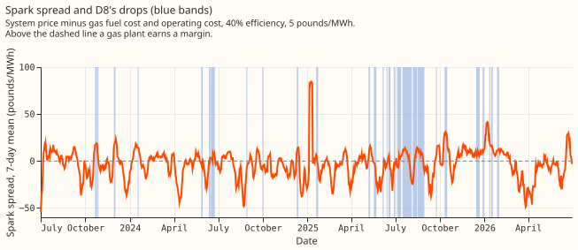
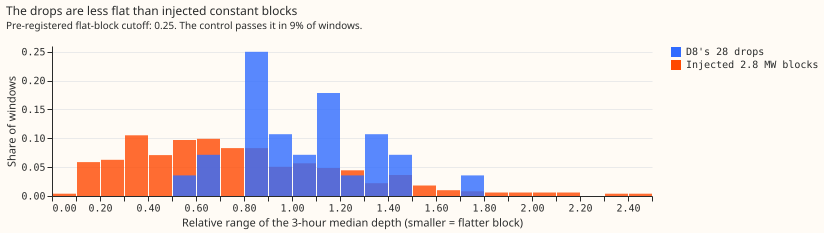

Experiment 186: are D8's multi-day drops a gas engine following the spark spread?
Take-home message: the evidence fits a gas engine below D8 that runs when electricity is dear
relative to gas, but does not prove it. D8 is a substation (Marsh Lane) of National Grid
Electricity Distribution (NGED). Experiment 159 found 28 multi-day stretches since July 2023 in
which D8's metered demand sits below the forecast, which it called drops, with a median shortfall of
2.8 MW. We asked whether a gas-fired generator below D8 explains the drops. NGED suggested an
embedded gas peaker that runs when the spark spread is positive, meaning the electricity system
price exceeds the cost of the gas burned to make it. We built the spread from public data (the
system price from Elexon, the electricity settlement operator, and the daily gas price from National
Gas, the gas transmission operator) and compared the days inside drops with ordinary days matched on
weekday, season, and temperature. We also tested whether the drops are flat on/off blocks, whether
they coincide with Triad half-hours (the three half-hours each winter of highest national demand,
which set transmission charges), and whether the Capacity Market register lists a gas plant next to
D8. The plan predicted two things: drop days have a positive spread at least 20 points more often
than matched days, and at least 20 of the drops are flat blocks. The first holds and the second does
not, so the verdict is partly supported. The Triad test does not support the hypothesis either.
The drops start when the spread rises and end when it falls. At 40% electrical efficiency, 82% of drop days have a positive daily spread, against 54% of ordinary days matched on weekday, season, and temperature. The 95% interval of the difference (+28.4 points) runs from +16.0 to +42.5. Most of the +28.4-point difference comes from the system price: holding the gas price at its mean still gives +24.4 points. Experiment 185 found a high system price on the worst days of the best-guess forecast, so the spread test cannot separate a gas engine from any other load that follows the system price.




Results
- Method. Public data only (about 23 MB in total; the National Gas data portal item "SAP, hourly actual" (SAP is the system average price) for the gas price, and the Elexon system price). Spark spread = system price − (gas price in pounds per MWh thermal ÷ electrical efficiency) − 5 pounds per MWh operating cost, at 35%, 40% (central), and 45% efficiency. A drop day has at least 75% of its half-hours inside a drop. Window: 2023-07-01 to 2026-06-30, 28 drops, 126 drop days, 839 ordinary days. Matching: same weekday, season within ±30 days, day-mean temperature within 2 degrees (widened to 4 or 6 if fewer than 3 days match), 1,000 draws, intervals from resampling drops.
- Spread share. Drop days minus matched ordinary days, in percentage points: +25.8 (+10.3 to +42.1) at 35%, +28.4 (+16.0 to +42.5) at 40%, +20.1 (+9.5 to +31.7) at 45%. The same test on the evening spread (16:00 to 19:00): +6.0 (−8.8 to +21.2), +10.7 (−0.8 to +22.7), +12.4 (+1.2 to +23.5). Price alone (gas held at its mean, 40%): +24.4 (+11.0 to +38.7). The system price in the top third of days: +12.0 (−2.2 to +28.3).
- Prices. Mean system price on drop days is 91.3 pounds/MWh against 77.9 on matched days (+13.8; +6.7 to +21.2). The gas price does not differ (−0.3 pounds/MWh thermal; −2.4 to +1.6).
- Start and end. The mean daily spread (40%) rises by +9.8 pounds/MWh (+2.3 to +16.9) between the 5 days before and the 5 days from a drop's first day, in the predicted direction for 20 of 28 drops. It falls by 8.0 (+2.0 to +14.3, in the predicted direction) between the 5 days up to the last drop day and the 5 days after it, for 18 of 28 drops.
- Half-hours inside drops. After removing each drop's hour-of-day mean, depth is +0.43 MW (+0.32 to +0.53) deeper in half-hours with a positive spread at 40%, higher in 27 of 28 drops. The removal matters because positive-spread half-hours cluster in the evening, when D8's shortfall is larger.
- Shape. None of the 28 drops is a flat block under the pre-registered cutoff (relative interquartile range of the 3-hour median depth under 0.25; median 1.06). The control, a constant 2.8 MW block injected into 494 ordinary windows of the drops' lengths, has median 0.70 and passes the cutoff in 9%. The shape evidence is therefore only that the drops are less flat than injected blocks: 3 of 28 drops are below the control median. The median share of variance in a drop explained by hour of day is 0.51, and the median ramp at the start is 0.55 of the depth (end: 0.81).
- D3, D14, and D5. None has a drop under D8's definition (24-hour median under −1.5 MW for 2 days). Runs under each series' own 5th percentile (9, 5, and 4 runs; median depths 0.4 to 0.8 MW) have median relative range 0.58 to 0.77 and none passes the cutoff, so these series do not contrast with D8 on flatness.
- Triads. The nine Triad half-hours of 2023/24 to 2025/26 (list from Modo Energy and Drax, which report the lists that the National Energy System Operator publishes) are published after the winter ends, so a peaker can only run on a forecast of the peak. One of the nine falls inside a D8 drop (the start day of one drop), against 10% of winter weekdays in a drop (probability of at least 1 by chance: 0.62). With nine Triads the test has little power: about 0.9 are expected inside a drop by chance. Depth at the Triad half-hour exceeds the same day's median depth for 7 of the 9, but depth at the same period on other winter weekdays outside drops is equally high: the Triad excess is +0.2 MW (−1.4 to +1.7). Winter weekday depth at 16:00 to 19:00 minus other hours inside drops is −0.2 MW (−1.1 to +0.8) over 9 drops, against +1.2 MW on winter weekdays outside drops, a feature of the evening shape of the frozen convex weather-to-demand model that produces the residual (experiment 159).
- Registers. The Renewable Energy Planning Database (published by the Department for Energy Security and Net Zero, Q2 2026) lists a landfill-gas plant of 1.3 MW within 5 km of D8, and gas-fuelled plants (landfill gas, anaerobic digestion) totalling 8.6 MW within 20 km; none is a natural-gas peaker. The Capacity Market register (National Energy System Operator, 21 October 2026) lists a gas plant of 6 MW (reciprocating engines, distribution-connected) at a grid reference 0.5 km from D8's coordinates, with agreements for the delivery years 2022-23 and 2023-24. Its obligation therefore ended by September 2024, while the drops run to January 2026, so the plant is not proven to be the source of all drops. A second unit of 20 MW (delivery year 2022-23) shares the grid reference, but the register describes it as many generating units controlled centrally, so the register does not give its sites. A further 20 MW reciprocating-engine unit lies 21.6 km away. Plant names are withheld here.
- Daily regression. Leaving one month out, adding to the temperature and season terms the spark spread raises R-squared by +0.035, the gas price alone by +0.038, the system price alone by −0.001, and the system price and gas price together by +0.063, from a baseline of −0.07. Drop days and matched days do not differ in gas price, so the gain from the gas price probably reflects a time trend (gas prices fell while drops became more frequent in 2025), which this experiment did not test.
- Matching on year (post hoc). 84 of the 126 drop days fall in 2025. Matching on calendar year as well, for the 101 drop days that have a same-year match, gives +31.6 points (+14.4 to +48.9), so the difference does not come from comparing different years.
Whether the spread could become a D8 regressor
- Candidate hindsight regressor. A D8 on/off indicator driven by the daily spread (spread above zero at 40% efficiency) could enter D8's training as a regressor known only after the day. The indicator explains little: the regression gain is +0.034 in out-of-fold R-squared, and 51% of all days in the window also have a positive spread.
- Forecast time. The indicator cannot be known exactly at forecast time. A spread forecast from day-ahead prices (the Elexon day-ahead market index and National Gas's forward price) might serve, but the signal is mostly the system price, which a day-ahead forecast does not reproduce.
- Better data. The plant's own half-hourly output would settle the hypothesis and give a direct regressor.
Checks
- Median minus mean forecast, per site. Not applicable: the experiment scores no forecast.
- Error of the mean forecast beside each contrast. Not applicable, for the same reason.
- Triggers. Trigger 1 fired: the flat-block control failed, because injected constant blocks pass the pre-registered 0.25 cutoff in 9% of windows. The cutoff was too strict for the residual's noise, so the 0 of 28 count says only that the drops are less flat than injected blocks. The calibrated comparison (3 of 28 drops below the control median) is post hoc. Triggers 2 to 7 of the skill's audit list did not fire: no contradiction with experiment 185 (the price signal here is a difference between drop days and matched days, not a share of the forecast's daily loss), no nested arms, no sister experiment, no leave-one-out flip, and no later design depends on this result.
- Bad gas values. The daily gas price has four values far outside the others: 72.8 (2024-07-25), 63.9 (2026-06-12), 0.51 (2025-11-29), and 0.47 (2026-06-17) pence per kWh, against 1.9 to 5.2 for the rest. All four are excluded, and 5 of the 1,090 days in the window have no spread (a missing price or an excluded gas value).
- Hour of day. The half-hourly contrast is computed after removing each drop's hour-of-day mean.
- Efficiency. The spread result holds at all three efficiencies (+25.8, +28.4, +20.1 points).
- Lab shortcuts. The residual comes from the frozen convex weather-to-demand model, driven by ERA5 (the European Centre for Medium-Range Weather Forecasts reanalysis) temperature, which is not available at forecast time. Drops are defined on that residual, so they inherit its errors.
What the next experiment should answer
Ask NGED for the plant's name, operator contact, and half-hourly output. With the output, test whether D8's drops equal the plant's generation, and whether the plant's dispatch follows the spread. We found no public-data test that could separate a gas engine from other loads that follow the system price.